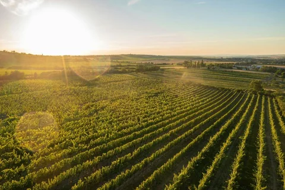
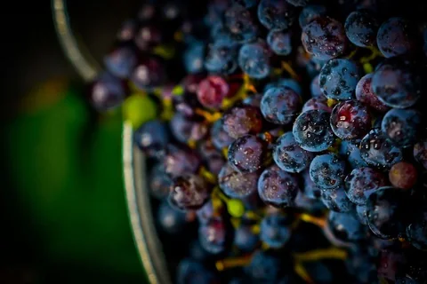

Volume disponible
18 420
bouteilles
Mon Chai centralise vos parcelles, vendanges,
cuverie, stocks, ventes, clients et documents
dans un outil pensé avec les vignerons.
Volume disponible
18 420
bouteilles
Vendanges
7
lots suivis
Prochaine action recommandée
Mise 75cl
Vérifier matières sèches, volumes disponibles et commandes en attente.
Clients actifs
248
fiches
Documents
12
à préparer
Mon Chai rassemble les informations clés de votre domaine : parcelles, vendanges, cuverie, stocks, ventes et clients, pour éviter les doubles saisies et garder une vision claire de votre activité.
Toutes les données du domaine au même endroit.
Volumes, stocks, clients et actions restent lisibles.
Moins de ressaisie, moins d’oublis, moins d’allers-retours.
Touchez un module pour voir ce qu’il couvre.
Mon Chai intègre un assistant conçu par une équipe française pour aider à retrouver une information, préparer une action ou synthétiser vos données.
Du 15 juillet au 31 octobre 2026
Aucun moyen de paiement demandé pendant la phase de test.
Vous choisissez librement de poursuivre ou non.
Pendant 1 an, puis 59 € HT / mois
Mon Chai est né d’un constat simple : les domaines viticoles jonglent encore trop souvent entre des outils qui ne communiquent pas, avec beaucoup de ressaisie et peu de visibilité d’ensemble.
Après plusieurs années dans les logiciels de gestion viticole, Denis a conçu Mon Chai pour relier les principales activités d’un domaine au sein d’un même outil, de la vigne à la vente.
Laura l’a ensuite rejoint pour développer l’expérience utilisateur, le design, la communication et l’accompagnement des domaines.
Aujourd’hui, notre programme bêta-test nous permet de confronter Mon Chai au terrain et de co-construire les évolutions les plus utiles.
Notre ambition : construire un outil utile, clair et adapté à la réalité des domaines.
Développé et hébergé en France
Denis Berthelot & Laura HallaisCo-fondateurs de Mon Chai
Tout d’abord aux domaines viticoles qui souhaitent centraliser leur gestion et mieux suivre leurs données, de la vigne à la vente. Mon Chai proposera également par la suite des modules pour cavistes et négociants.
Vous testez gratuitement le logiciel du 15 juillet au 31 octobre : le programme vient d’être prolongé d’un mois. En échange, vous partagez vos retours pour nous aider à construire un outil vraiment adapté au terrain. Un accompagnement personnalisé est inclus : transfert de données, formation et webinaire de prise en main.
Oui. Nous vous accompagnons pour importer vos données existantes (parcelles, clients, stocks) depuis vos fichiers ou vos outils actuels. Le transfert est offert pendant le programme bêta-test.
Oui. Vos données sont hébergées en France sur des serveurs sécurisés, avec des sauvegardes régulières et un accès protégé. Vous restez seul propriétaire de vos informations.
À partir du 1ᵉʳ novembre 2026 : 49 € HT / mois pendant un an, puis 59 € HT / mois, sans engagement. Les bêta-testeurs bénéficient d’une offre Primeurs qui leur est réservée.
Selon votre domaine : transfert de vos données, une heure de formation individuelle, un webinaire de prise en main et une assistance dédiée et réactive pour bien démarrer.
L’accès complet au logiciel et à toutes ses fonctionnalités, les mises à jour et l’assistance incluses. Jusqu’à 2 utilisateurs, puis +15 € HT par utilisateur supplémentaire.

15 juillet - 31 octobre 2026
Rejoignez l’aventure Mon Chai : testez gratuitement le logiciel et
partagez vos retours pour construire, ensemble, un outil vraiment adapté
au quotidien des domaines viticoles.
Date à venir sur LinkedIn · Replay ensuite sur YouTube
Découvrez l’histoire de Mon Chai, les convictions qui nous animent
et les coulisses de l’ouverture de notre programme bêta-test.

1er - 3 décembre 2026
Venez échanger avec notre équipe, découvrir le logiciel
et assister à une démonstration de Mon Chai.
Autorisez les services tiers pour afficher la publication complète.
Voir sur InstagramAutorisez les services tiers pour afficher la publication complète.
Voir sur Instagram